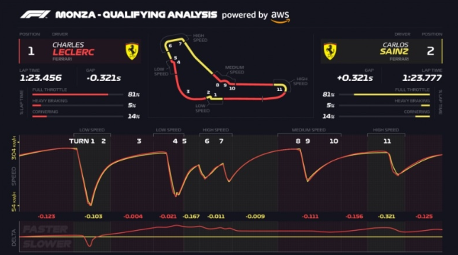

Telemetria em Tempo Real

Simuladores como o iRacing exportam dados brutos via protocolos de comunicação (como UDP). Desenvolvedores criam pequenos aplicativos em Python ou JavaScript que "escutam" esses dados e os transformam em gráficos.
Simulador interativo